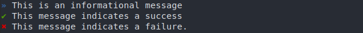

Input, output, and flow control
Basics for input, output and flow control. Refer to tenlib.flow's documentation for details.
Input
Receiving arguments using sys.argv or argparse can get tedious, especially
when you just want to run a quick program.
Program arguments
To avoid this, the arguments to the main function are mapped to command-line arguments automatically.
from ten import *
@entry
def main(a, b):
print('a:', a)
print('b:', b)
main()
You'd call the program like so:
$ ./program.py testA testB
a: testA
b: testB
Argument types
Another annoying thing when fetching arguments is typing: what if I want an argument to be an integer ? Well, type-hinting is supported.
@entry
def main(a: int, b: int):
c = a + b
print(c)
You can even use lists:
# Note: list[int] requires py3.10 -- For earlier versions, use typing.List[int]
@entry
def main(all_numbers: list[int]):
c = sum(all_numbers)
print(c)
$ ./program.py 1 2 3 4
10
Optional arguments
If your input argument has a default value, its expected type will be the same as the default value, and it will become an optional argument.
@entry
def main(some_arg, some_number=3, some_string='test'):
print('some_arg:', repr(some_arg))
print('some_number:', repr(some_number))
print('some_string', repr(some_string))
The two last arguments will be optional, as can be seen using the --help
command.
$ ./program.py -h
usage: program.py [-h] [-s SOME_INT] [-S SOME_STR] some_arg
positional arguments:
some_arg
optional arguments:
-h, --help show this help message and exit
-s SOME_INT, --some-int SOME_INT
-S SOME_STR, --some-str SOME_STR
Example call:
$ ./program.py some_value -s 123
some_arg: 'some_value'
some_number: 123
some_string: 'test'
Entry class
For more complex scripts, you might want to use an object instead of a single function. To do so, apply the @entry decorator to the class instead. It'll get instanciated with the program arguments, and its run() method will be called.
from ten import *
@entry
class Exploit:
def __init__(self, url: str, workers: int):
self.url = url
self.workers = workers
def run(self):
...
Exploit()
Generally, the __init__ function only sets values from the arguments. Therefore, @entry synergizes well with @dataclass:
from ten import *
from dataclasses import dataclass
@entry
@dataclass
class Exploit:
url: str
workers: int
def run(self):
session = ScopedSession(url, workers)
...
Exploit()
Documentation
Entrypoint arguments can be documented using the @arg decorator.
@entry
@arg("url", "Target URL")
@arg("proxy", "Proxy URL")
@arg("max_connections", "Maximum number of connections")
def main(url, proxy=None, max_connections=10):
"""CLI documentation for the program.
"""
The --help command will display the documentation:
/tmp/l1 --help
Usage: l1 [-h] [-p PROXY] [-m MAX_CONNECTIONS] url
CLI documentation for the program.
Positional Arguments:
url Target URL
Options:
-h, --help show this help message and exit
-p, --proxy PROXY Proxy URL
-m, --max-connections MAX_CONNECTIONS
Maximum number of connections
Output
Spamming prints works, but it can get hard to read. Use the msg_* functions to display easy to read, identifiable messages.
Basics
msg_info('This is an informational message')
msg_success('This message indicates a success')
...
msg_failure('This message indicates a failure.')
This displays the line with a prefix:

Ten's output is handled by rich library, so you can use its built-in style edition features.
msg_info(f'Found this value: [blue]{value}[/]')
msg_failure(f'This value is not valid: [red b]{value}[/]'')

Changing the display style
A few other output styles were implemented. Use set_message_formatter() to
set the style you prefer:
set_message_formatter("Oldschool")
# OR ...
set_message_formatter("Slick") # personal favourite
those two would yield:


Flow control
Pausing
You can pause execution at any time using pause().
Exiting early
Oftentimes in exploits, you want to display a message, then exit, because something didn't go as planned.
You can do it in one line using:
leave('Exploit done, exiting.')
If the reason for the early exit is a failure or an error, you can use the eponym functions:
# We want ints only ! a stack trace will be displayed.
if not instance(value, int):
error('Value should be of type int: {!r}', value)
# Cannot exploit with value < 0. Exits, but no stack trace displayed
if value < 0:
failure('Value is inferior to zero, unexploitable.')
Assumptions
The same as the assert builtin, but the message gets displayed using msg_failure(), and no stack trace is displayed.
assume(value >= 0, f'Value is inferior to zero: {value}')
inform: Status of your functions
Say you have a slow function in your code. You'd generally end up with something like this:
def slow_func():
print('Starting slow_func, might be slow...')
# Actually getting stuff done
...
if result:
print('Result OK !')
else:
print('Result not OK !')
return result
With inform, you can let ten handle the output. go gets displayed along with a spinner while the function is running. Then, a different message gets displayed in function of the result.
@inform(
go="Starting slow_func, might be slow...",
ok="Result OK !",
ko="Result not OK !",
)
def slow_func():
# Actually getting stuff done
...
Use the {result} format to incorporate the result in the success/failure message:
@inform(
"Counting links in page...",
"Found {result} links in page",
"No links were found.",
)
def count_links(url):
r = session.get(url)
links = r.select("a")
return len(links)
For single-function programs, you can combine it with @entry:
@entry
@inform("Downloading sources...", "Downloaded {result} source files.")
def main(url):
...
main()